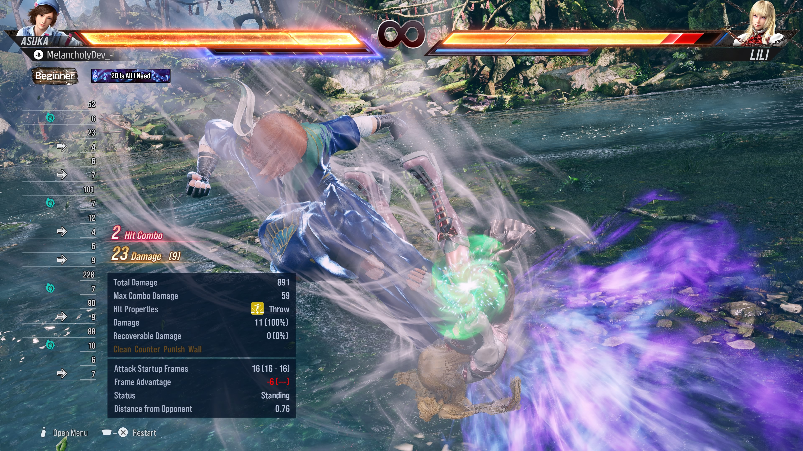
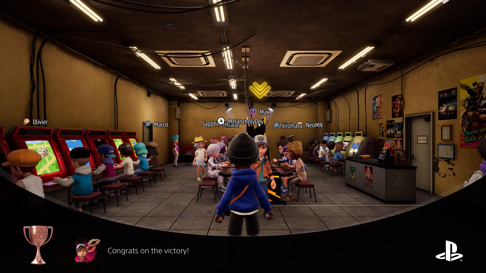
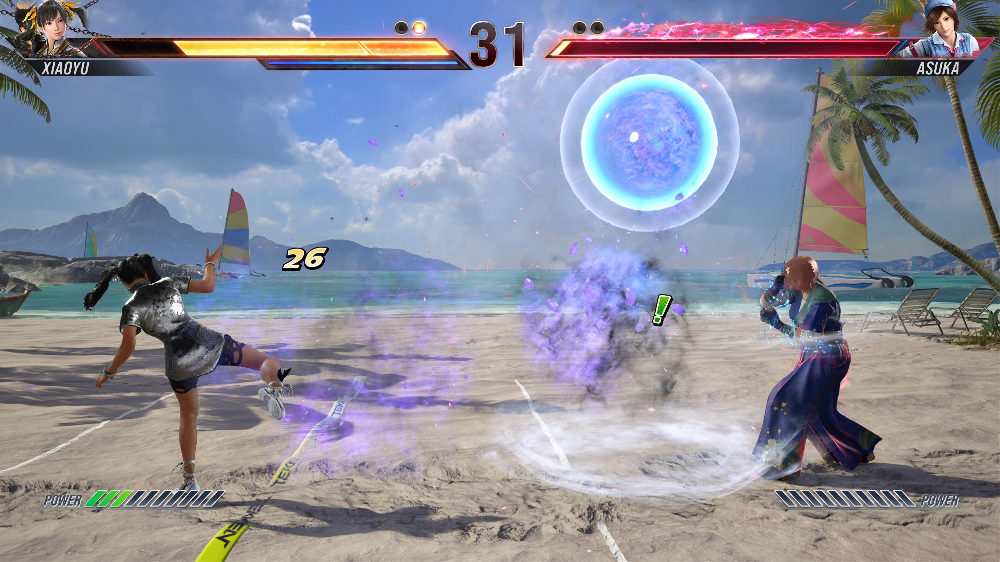
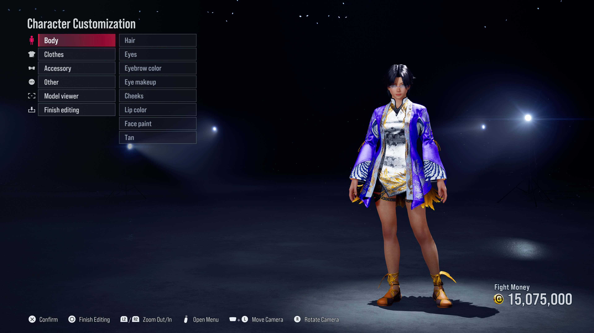

- Jin Kazama
- Kazuya Mishima
- Jun Kazama
Tekken 8
The game story mode, titled The Dark Awakens, takes place six months after the events of its predecessor and focuses on the final confrontation between the main characters, father and son Kazuya Mishima and Jin Kazama, with the latter wishing to kill the former in order to end the chaos within their family lineage.

Tekken 8 Features
Heat System
This is one of Tekken's newest implements which allows the player to more aggressive as compared to Tekken 7. It acts as a way to stop aggressive players offensive and continue your own.
Arcade Quest
Arcade Quest, another new feature presented this year which acts as fun way to learn the game, with any character of your choosing through a retro arcade-styled seting. You can also create your own personalized character as shown in the image above while advancing to different stages.
Tekken Ball
Tekken Ball was a feature in Tekken 3, but has returned this year as it was in high demands from fan. This is just another wacky way to have fun with friends play our favorite fighting game.
Character Customization
The Character Customization has improved tremoundously as you can make parodies of character from your series. Some have mae Tifa(Final Fantasy), Ada Wong & Leon(Resident Evil Series), and more.
Gameplay
Below is just some gameplay of me playing around online with opponents. This is just one of the many characters and maps introduced in Tekken.
What are you waiting for!
Tekken is available on all platforms for purchase and is a great way to join the battle through its immersive gameplay.